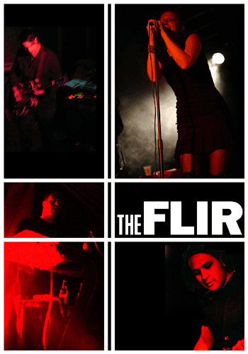
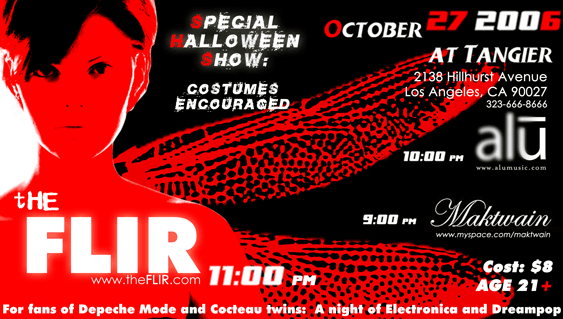
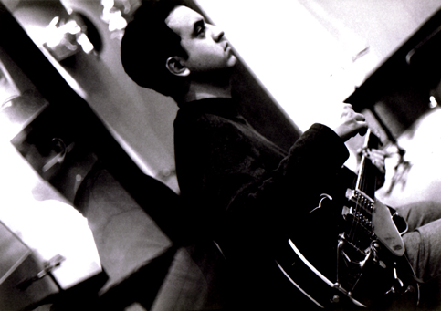

Design System 2026
Direction Thermal Register. The palette is a temperature scale: thirteen greys are the instrument, #C00000 is heat, and red marks the single hottest element on any surface. Type is clean and rule-bound; the photography underneath it is dark, grainy and desaturated. Nothing is rounded.
The wordmark is the band's own and is not redrawn: one word, two faces at a locked 1:2 ratio — THE in Placard Condensed, FLIR in Frankfurter Heavy, shared baseline, no word space. Placard Condensed also carries every headline at 48px and up. The system is built around these, not over them.
Naming. The band is always THE FLIR. Never "FLIR" alone — that is an unrelated business. Both words stay together in the mark, in copy and in catalogue numbers (TF-001).
Tokens
tokens/Real CSS custom properties, commented. Every component in this system resolves to these three files.
Assets
assets/A working set pulled from THE_FLIR/Art Work and THE_FLIR/Business Card. Photography passes through --flir-photo-filter everywhere it is used — the archive was shot under green, magenta and sodium stage light, and desaturating is what makes it read as one body of work.






Guidelines
guidelines/One preview card per topic.
Components · core
components/Each component is a .jsx + .prompt.md + .card.html triplet.
Web
web/For the future theflir.com.
Kunaki CD jacket and the gig poster master.
Open questions
Placeholders that need your material before this is production-ready:
Social
social/Instagram masters for @theflir. Authored at true output pixels, scaled for preview.